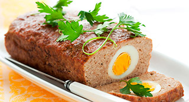

Pan de carne asado con crema de Xató y brocheta de tomates lacados y romero
"Como convertir una humilde carne picada en un plato de fiesta, versatil y abierto a la imaginación"

| Carne picada de cerdo | 400 gr. |
| Carne picada de ternera | 150 gr. |
| Miga de pan de molde | 4 un. |
| Leche entera | 200 ml. |
| Huevos | 2 un. |
| Diente de ajo | 1 un. |
| Perejil picado | 1 cs. |
| Sal | 7 gr. |
| Pimienta | 1 gr. |
 |
|
| Especias (curry, moscada, tandoori...) | |
| Hierbas (tomillo, romero, hierbabuena ...) | . |
| Líquidos (Jeréz, Perrins, Tabasco, Ketchup...) | |
| Sólidos (huevos duros, frutos secos, verduras...) | |
| Envolventes (hojaldre, philo, brioche...) | |
|
|
| Salsa Xató | 150 gr. |
| Caldo de ave o verduras | 100 ml. |
| Nata líquida | 50 ml. |
| Pimienta cayena | 1/2 cc. |
|
|
| Tomates cherry | 24 un. |
| Salsa de soja | 100 ml. |
| Azúcar moreno o moscovado | 250 gr. |
| Agua mineral | 250 ml. |
| Jengibre fresco pelado y rallado | 7 gr. |
| Piel de mandarina rallada | 10 gr. |
| Romero en rama | 4 un. |
- Remojar la miga de pan con leche.
- Batir los huevos y picar finamente el ajo.
- En un bol colocar los dos tipos de carne, los huevos, la miga de pan escurrida, el ajo, la pimienta, la sal y la pimienta.
- Trabajar con las manos hast obtener una masa fina y consistente. Dejar reposar 10'.
- En este punto aromatizar al gusto con especias, hierbas, líquidos... Dejar repor 10' más.
- Precalentar el horno a 170º y preparar el/los moldes de cocción.
- Ir poniendo en el molde la mezcla de carnes y los sólidos a elección (huevos, frutos secos, verduras...)
- Introducir en el horno y dejar cocer entre 12' y 40' dependiendo del tamaño del molde.
- Si tenemos algún tipo de molde o termómetro, pinchamos en el centro y retiramos cuando la temperatura sea de 56º.
- Otro modo de verificar la cocción es introducir una brocheta o pincho, si las gotas de líquido que salen del interior son transparentes se podrá retirar.
- Una vez finalizada la cocción retirar del horno y dejar reposar unos minutos antes de desmoldar.
- En un caso mezclar la salsa Xató con el caldo de ave. Llevar a ebullición.
- Cuando levante el hervor añadir la nata y dejar reducir hasta obtener una textura cremosa.
- Rectificar de sal. Añadir la pimienta de Cayena y pasar por un colador fino.
- Mantener en caliente tapado hasta el servicio.
- Juntar en un cazo la salsa de soja con el azúcar y el agua.
- Llevar a ebullición para que el azúcar se disuelva totalmente.
- Retirar del fuego, añadir el jengibre rallado y la piel rallada de mandarina e infusionar 15 min. Reservar
- Hacer una pequeña cruz en el pedúnculo de cada tomate y escaldarlos en agua hirviendo durante 5 seg.
- Escurrir y enfriar en agua con hielo. Pelar los tomates.
- Juntar los tomates pelados con la marinada de salsa de soja y marinar a temperatura ambiente durante 2 h.
- Disponer los tomates con la marinada en una sartén, cocer a fuego vivo hasta obtener una textura acaramelada procurando que los tomates no se rompan.
- Retirar del fuego y guardar hasta el acabado y presentación. Acabado/Presentación
- Desmoldar el pan de carne y cortarlo si es necesario. Colocarlo en el centro del plato.
- Pinchar los tomates en una rama fresca de romero. Disponerlos o pincharlos en el pastel de carne.
- Servir la salsa calienta aparte o napando el pastel de carne. Servir inmediatamente.